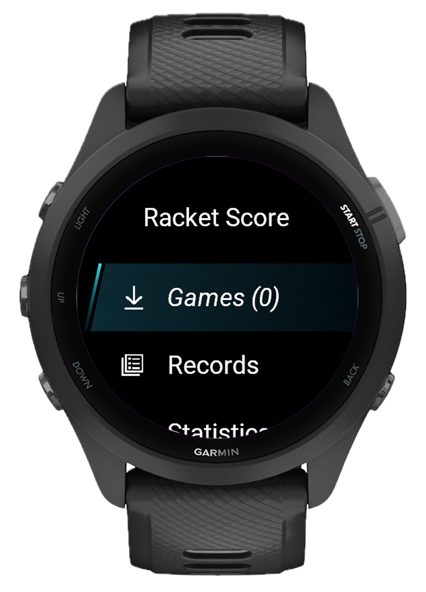
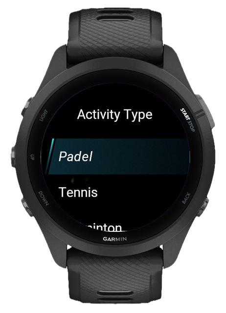
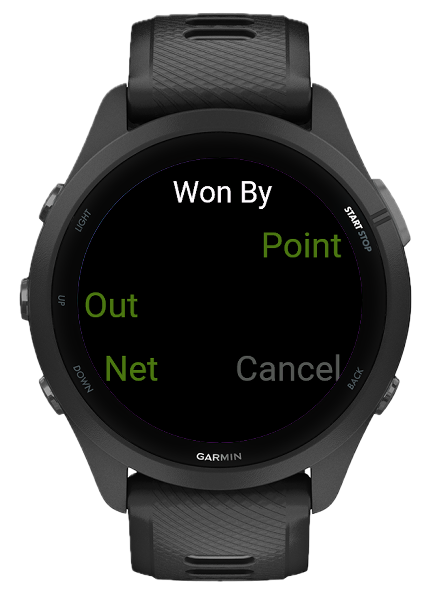
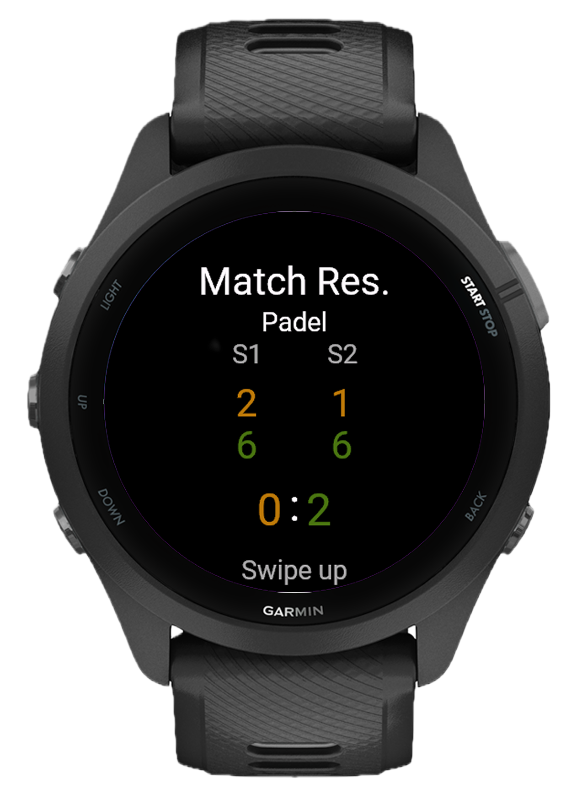
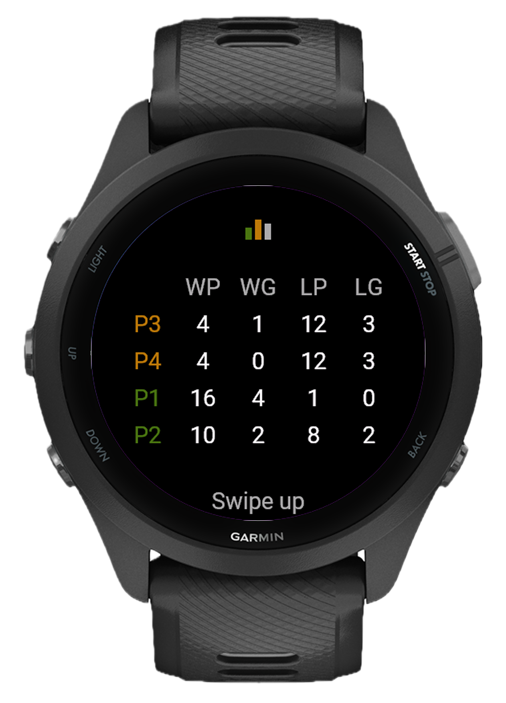

Everything at a glance #
Open the dashboard and you immediately see where you stand. Win rate, play time, serve percentage, return wins. Your recent matches are right there with full scores and tags. Set weekly goals and track them without opening a spreadsheet.
Let someone else watch the score #
While you play, the live scoreboard streams the match to any browser. Friends waiting for the next court, your coach at home, or just your phone on the bench. Big, clean numbers that update in real time, point by point.
Every match, saved and searchable #
Scroll through your match history and filter by sport, player, location, or tags. Every match card shows the score, duration, sport type, and who played. Tap into any match for point-by-point detail, swing data, and serve stats.
Pin every court on the map #
GPS tags each match automatically. Over time, you build a map of every place you've played, from your local club to that court you found on vacation. Tap any pin to see what happened there.
Find out what's actually working #
Do you win more in shorter matches or longer ones? What's your win rate when your heart rate stays low? How do you stack up against a specific opponent across serve %, return %, clutch moments, and tiebreaks? Pick any two players and compare them side by side.
Track how your game evolves #
Shot power trends over weeks, intensity patterns across matches, error breakdowns for both sides. These aren't numbers you check once. They're the kind of thing that changes how you warm up, how you train, and which shots you trust in a tight game.
One app, six sports
Each sport has its own scoring rules, serve logic, and game modes built in. Golden point, advantage, timed matches, Americano, best of 3 or 5, you set it up once and it just works. Connect watches with your playing partners over ANT+ and everyone stays in sync, no phone required. Every match is saved as a native Garmin activity.
The web dashboard and API run as Docker containers on your own server or home machine. Pre-built images are published to the GitHub Container Registry, no build step needed.
Available images
Prerequisites
- Docker and Docker Compose installed
1. Create docker-compose.yml
2. Create .env
Create a .env file in the same directory:
Change at minimum: POSTGRES_PASSWORD, JWT_SECRET_KEY, and RESET_SECRET_KEY. Generate secrets with openssl rand -hex 32.
3. Start
The web UI is available at http://localhost:3847 (or your configured WEB_PORT). The API runs on port 8741, which is the address you configure on the watch for syncing. Default password is admin; you'll be prompted to change it on first login.
Updating
Watch → Server connectivity
The watch syncs over HTTP to your server's IP and port 8741. Make sure:
- The watch and server are on the same Wi-Fi network, or
- The server is reachable over the internet (port forwarded / VPN / public IP)
You can find the correct IP addresses in Settings → Watch Connection inside the web dashboard.
What's new #
- New Font Size setting, choose between Small and Medium for all gameplay labels
- Available from both the in-game menu (long-press UP) and main Settings
- Black added as a color option for data fields
- Descent™ G2
- Descent™ Mk3 43mm / Mk3i 43mm
- Descent™ Mk3i 51mm
- Approach® S50
- Approach® S70 42mm
- Approach® S70 47mm
- 11 preset color themes available in Settings > Colors > Themes
- Long-press UP during gameplay for quick theme switching
- Optimized for MIP displays
- Fixed incorrect scoring for the Silver Point deuce rule in Padel and Tennis
- Full scoring for Padel, Tennis, Pickleball, Badminton, Squash and Table Tennis
- Each sport uses correct rules, point system and game structure
- Golden Point mode for padel
- Tiebreak support
- Singles and doubles
- Undo last point at any time
- Host a match and share the live score with every player on the court
- Everyone sees the score update in real time on their own watch
- Vibration alerts on every game and set won
- Automatic swing detection on every shot
- Measures G-Force and estimates Power output in Watts per swing
- View average and peak values in the post-match summary
- Track whether your hitting is improving over time
- Follow any active match in real time from a browser
- See live score, current game, set progress and physical stats as they update
- No need to be on the court
- Live score streaming and match sync require a Bluetooth connection between your watch and your phone via the Garmin Connect app
- Multiplayer scoring between watches uses ANT+ directly and does not require a phone
- Every match saved with full detail
- Set scores, point by point history, serve and return win rates, heart rate, calories, play time, swing count and power data
- Filter and browse past matches by sport, result, date and more
- Create player profiles and link them to Garmin devices
- Track individual performance over time
- Compare stats between players and sessions
- Win rate trends, serve and return win percentages, error analysis, fitness trends, power over time and intensity charts
- Filterable by sport, date range, result and team mode
- Set weekly or monthly targets for matches played, win rate, play time, calories, power and more
- Track progress directly from the dashboard
- Add the stat tiles and goals that matter to you
- Reorder and arrange sections to suit how you review your data
- Create full database snapshots directly from settings and restore them at any time
- Device backups store match data uploaded from your Garmin watch and can be restored individually
- Never lose your match history